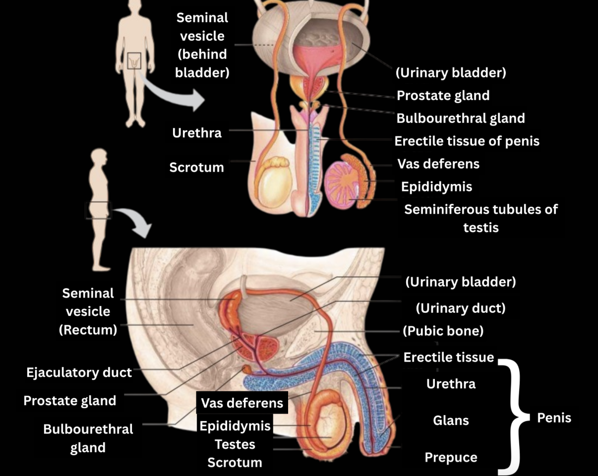
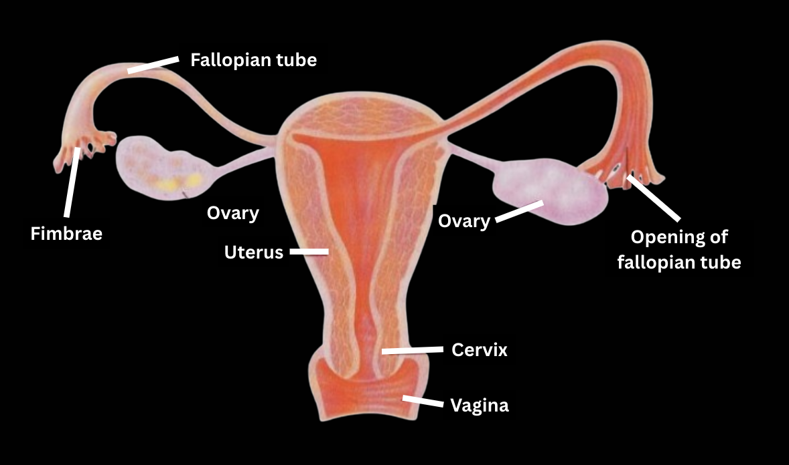
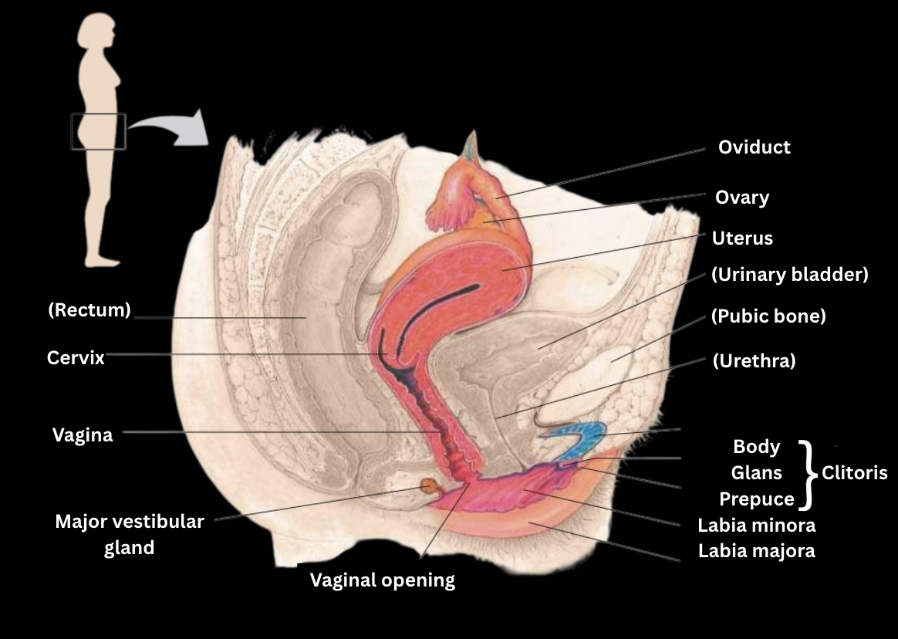

The Male Reproductive System
Internal Anatomy
- Testes - the male gonads which produce sperm in small, highly coiled seminiferous tubules. The temperature of the testes is generally maintained around 2 degrees Celsius below the general body temperature. They develop within the abdominal cavity and descend right before birth. Testis within a scrotum is called a testicle. Germ cells move progressively inward in the tubule wall until they are secreted into the lumen.
- Epididymis - a pair of coiled ducts, each around 6 m in length when uncoiled, which receive the spermatids from the seminiferous tubules. The spermatozoa spend around three weeks in this duct, during which they mature and become motile.
- Spermatozoan has a distinct structure and function. In humans, as in most species, a head containing the haploid nucleus is tipped with a specialised vesicle, the acrosome, which contains enzymes that help the sperm penetrate an egg. Behind the head, many mitochondria provide ATP for the movement of the flagellum.
- Vas deferens - a pair of muscular ducts, extending around and behind the urinary bladder, where it joins a duct from the seminal vessels, forming a short ejaculatory duct.
- Urethra - the outlet tube for both the excretory and reproductive systems. It runs along the penis, opening to the outside at the tip.
- Accessory glands - these three glands produce secretions which combine with sperm to produce semen, the ejaculated fluid:
- Two seminal vesicles - they contribute around 60% of semen's volume. Their secretion is thick, yellowish and alkaline, containing mucus, fructose, a coagulating enzyme (semenogelin), ascorbic acid and local regulators, prostaglandins.
- Prostate gland - secretes thin and milky fluid directly into the urethra. This secretion contains citrate, which functions as a nutrient for sperm, and anticoagulant enzymes.
- Bulbourethal glands - a pair of small glands along the urethra below the prostate. Before ejaculation, they secrete mucus which neutralises any leftover acidic urine. Bulbourethral fluid does carry a small amount of sperm released before ejaculation and may contribute to the ineffectiveness of the withdrawal (pull-out) method of birth control.
The External Anatomy
- Scrotum - a fold in the body wall containing testes and enabling temperature control.
- Penis - contains the urethra as well as three cylinders of erectile tissue. The majority of it is enveloped in relatively thick skin, however, the head of the penis, the male glans is covered by a much thinner layer and is more susceptible to stimulation. It is covered by a fold of skin called the prepuce or foreskin. During arousal, the erectile tissue is filled with blood from the arteries. As the tissue fills, the resulting pressure results in the sealing of the draining veins, allowing the tissue to be engorged with blood. Most animals rely on penile erection for mating, however, some also have a bone to further stiffen the penis (humans do not).
- Erectile dysfunction (the inability to form or maintain an erection) can result from diverse psychological or physiological causes. It can be remedied with drugs that promote the action of the local vasodilator nitric oxide. The resulting relaxation of smooth muscle in blood vessels allows for enhanced blood flow to erectile tissues.

Female Reproductive System
Internal Anatomy
- Ovaries - the almond-sized female gonads that flank the uterus from each side. They are held in place by ligaments. The outer layer of each ovary is filled with follicles - oocytes surrounded by supporting cells.
- Fallopian tubes (or oviducts) - tube-like structures that extend from the uterus to a funnel-like fimbriated opening in the abdominal cavity near an ovary. The dimensions of this structure vary, with the diameter of the narrowest parts matching the diameter of a human hair. They are lined with ciliated epithelium. Upon ovulation, these cilia start beating. This motion draws the egg to the oviduct together with abdominal fluid. Further motion of the cilia, together with wave-like contractions of the oviduct, carries the egg to the uterus. Here, fertilisation happens if viable sperm are present.
- Uterus (otherwise the womb) - a hollow, thick-walled, muscular organ between the urinary bladder and rectum. It can stretch significantly during pregnancy to accommodate the fetus. The inner lining of the uterus is called the endometrium. It is richly supplied with blood vessels and is the source of menstrual bleeding. The lower part of the uterus is called the cervix.
- Vagina - a canal, connecting the uterus to the outside of the body. It is muscular, but elastic, allowing for penis insertion during copulation and also serving as a birth canal.

External Anatomy
- The mons pubis - the rounded, fatty mound over the junction of pubic bones.
- Labia majora - a pair of thick, fatty ridges that enclose and protect the rest of the vulva.
- Labia minora - a pair of slender skin folds, that border the cavity in which the vaginal opening and the opening of the urethra are located. A thin piece of tissue called hymen partly encloses the vaginal opening at birth, but becomes thinner over time and typically wears away during physical activity.
- Clitoris - a piece of erectile tissue, supporting a rounded glans (or head), covered by a small hood made out of skin, the prepuce. There are many nerve endings in the clitoris, rendering it very sensitive.
- The vaginal opening - the site where the vagina opens to the external environment.
- Vestibular (Bartholin's) glands - paired structures that secrete mucus to lubricate the vagina and the vulva.
- Mammary glandsMammary glands, although not a part of the reproductive system, but the female ones (they are present in both sexes; however, the male ones are non-functional) are important in reproduction. They are located in the breasts. Within these glands, sacs of epithelial tissue secrete milk, which drains through ducts to the nipple. The breasts also contain connective and fatty (adipose) tissue in addition to the glands.

Written by Kotryna Mieldažytė